MARTES
8 DE OCTUBRE
19.30h
Ateneo del Raval
Calle de la Reina Amàlia, 3 (Barcelona)
SÁBADO
19 DE OCTUBRE
16.30h
Centro de Empoderamiento de las Trabajadoras del Hogar y los Cuidados
Calle Tolosa Latour 23 / entrada por Avenida de los Poblados (Madrid)
DOMINGO
20 DE OCTUBRE
15.30h
LA TROBADA - Barcelona Ciutat Diversa, Ayuntamiento de Barcelona
Paseo Lluís Companys - Arc de Triomf (Barcelona)
SÁBADO
26 DE OCTUBRE
18h
FESC2019
Calle de Sant Adrià, 20 (Barcelona)
MARTES
5 DE NOVIEMBRE
18h
ESPAI PLANA DE L'OM
Carrer del Born (Manresa)
VIERNES
8 DE NOVIEMBRE
16.30h
Centre Municipal Ana Díaz Rico
Plaza Blocs Florida, 15B (L'Hospitalet de Llobregat)
VIERNES
20 DE DICIEMBRE
18h
ATENEU POPULAR DE VILAMAJOR
(Vilamajor)
JUEVES
27 DE JUNIO
19h
Zumzeig Cinema, cinema cooperativo
Calle de Béjar, 53 (Barcelona)
SÁBADO
6 DE JULIO
17.30h
La Morada, Casa Cultural feminista
Carrera 19 #36-34 (Bogotá, Colombia)
JUEVES
18 DE JULIO
19h
La Sala de la Bonne
Centro de Cultura de Mujeres Francesca Bonnemaison
Calle de Sant Pere Més Baix, 7 (Barcelona)
MIÉRCOLES
24 DE SEPTIEMBRE
19h
Cinema Esbarjo, Fira de Economia Social y Solidaria de Cardedeu - Vallès Oriental
Calle Lluís Llibre, 27 (Cardedeu)


 



 


